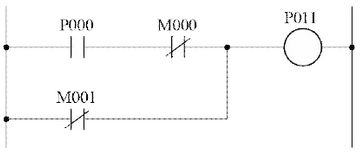
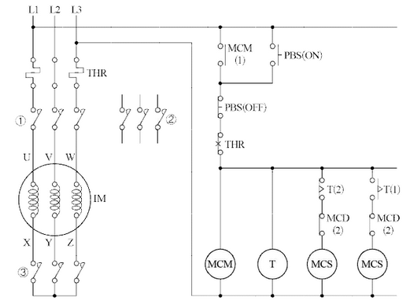
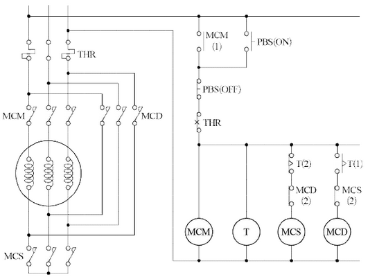
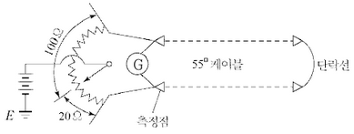
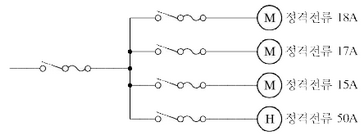
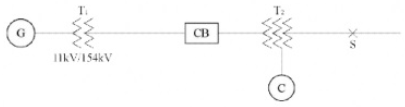
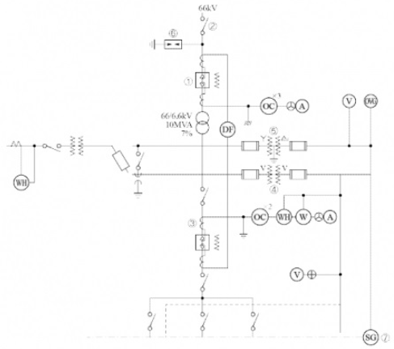

정답 ①
②
③
해설) 서술 암기형 / 난이도 中
정답
부분점수
| 점수 | 세부기준 |
|---|---|
| 6~0점 | 한 문항이 맞을 때마다 2점씩 획득 |
해설
다양한 답이 나올 수 있는 문제이다. 자가용 발전설비의 가동에 의한 피크 제어방식을 사용하는 것도 정답이 될 수 있다.
| 공칭전압 [V] | 최대사용전압 [V] | 절연내력 시험전압 [V] |
|---|---|---|
| 6,600 | 6,900(비접지) | ① |
| 13,200 | 13,800(중성점 다중접지) | ② |
| 22,900 | 24,000(중성점 다중접지) | ③ |
①
②
③
①
②
③
해설) 단순 계산형 / 난이도 下
$ ① 6,900 = 10,350 [V] $
$ ② 13,800 = 12,696 [V] $
$ ③ 24,000 = 22,080 [V] $
① 10,350 [V]
② 12,696 [V]
③ 22,080 [V]
부분점수
| 점수 | 세부기준 |
|---|---|
| 5점 | 3문항이 모두 정답인 경우 5점 획득 |
| 3점 | 2문항이 정답인 경우 3점 획득 |
| 1점 | 1문항이 정답인 경우 1점 획득 |
해설
절연내력 시험전압(최대 사용전압의 배수)
| 접지방식 | 최대 사용전압 | 시험 전압 배수 | 최저 시험전압 |
|---|---|---|---|
| 비접지 | 7[kV] 이하 | 1.5배 | |
| 7[kV] 초과 | 1.25배 | 10,500[V] | |
| 중성점 비접지 | 60[kV] 이하 | 1.25배 | |
| 60[kV] 초과 | 1.25배 | ||
| 중성점 접지 | 60[kV] 초과 | 1.1배 | 75,000[V] |
| 중성점 직접접지 | 60[kV] 초과 | 0.72배 | |
| 170[kV] 이하 | |||
| 170[kV] 초과 | 0.64배 | ||
| 중성점 다중접지 | 7[kV] 초과 | 0.92배 | |
| 25[kV] 이하 |
※ 전로에 케이블을 사용하는 경우에는 직류로 시험할 수 있으며, 시험 전압은 교류의 경우의 2배가 된다
정답:
정답
부분점수
| 점수 | 세부기준 |
|---|---|
| 5~0점 | 한 문항이 맞을 때마다 1점씩 획득 |
해설
[조명기구의 배광에 의한 분류]
| 종류 | 내용 |
|---|---|
| 직접조명 | 빛을 직접 대상물에 비추는 방식이다. |
| 반직접 조명 | 빛의 약 60% 정도는 아래로 향하여 직접 표면을 비추고 나머지 빛은 천정 면을 향하여 반사시키는 방식이다. |
| 전반확산 조명 | 하향광속으로 직접 작업 면에 직사시키고 상향광속의 반사광으로 작업면의 조도를 증가시키는 방식이다. |
| 반간접 조명 | 직접조명과 간접조명의 단점을 보완한 것으로 발산광속 중 상향 광속이 약 60~90[%], 하향 광속이 약 10~40[%]로 조정한 조명방식이다. |
| 간접 조명 | 상향광속이 90~100[%]가 되고 하향광속은 10[%] 정도로 대부분의 발산광속을 윗 방향으로 확산시키는 방식이다. |
상용전원과 예비전원 사이에는 병렬운전을 하지 않아야 하므로 수전용 차단기와 발전용 차단기 사이에는 전기적 또는 기계적 (①)을 시설해야 하며 (②)를 사용해야 한다.
정답 1 2
| 점수 | 세부기준 |
|---|---|
| 4점 | 두 문항이 모두 정답인 경우 4점 획득 |
| 2점 | 두 문항 중 한 문항이 정답인 경우 2점 획득 |
[비상용 예비전원의 시설(KEC 244.2.1)]
상용전원의 정전으로 비상용전원이 대체되는 경우에는 상용전원과 병렬운전이 되지 않도록 다음 중 하나 또는 그 이상의 조합으로 격리조치를 하여야 한다.
①
②
③
해설) 서술 암기형 / 난이도 중
① 전로의 보호장치의 확실한 동작을 확보한다.
② 이상전압을 억제한다.
③ 대지전압을 저하시킨다.
| 점수 | 세부 기준 |
|---|---|
| 5점 | 3문항이 모두 정답인 경우 5점 획득 |
| 3점 | 2문항이 정답인 경우 3점 획득 |
| 2점 | 1문항이 정답인 경우 2점 획득 |
[한국전기설비규정 322.5] 전로의 중성점의 접지
전로의 보호장치의 확실한 동작의 확보, 이상전압의 억제 및 대지 전압의 저하를 위하여 특히 필요한 경우에 전로의 중성점에 접지공사를 할 경우 접지도체는 공칭단면적 16 $ [mm^2] $이상의 연동선으로서 고장 시 흐르는 전류가 안전하게 통할 수 있는 것을 사용하고 또한 손상을 받을 우려가 없도록 시설할 것 $$
저압전로에 시설하는 보호장치의 확실한 동작을 확보하기 위하여 특히 필요한 경우에 전로의 중성점에 접지공사를 할 경우 접지도체는 공칭단면적 6 $ [mm^2]$ 이상의 연동선으로서 고장 시 흐르는 전류가 안전하게 통할 수 있는 것을 사용하여야 한다.
변압기의 안정권선이나 유휴권선 또는 접지공사를 할 때에는 규정에 의하여 접지공사를 하여야 한다. 특히, 필요할 경우에 그 권선에 접지공사를 할 때에는 규정에 의하여 접지공사를 하여야 한다.
① 선로의 보호 장치의 확실한 동작의 확보: 지락고장 시 접지계전기의 확실한 동작
② 이상전압의 억제: 뇌, 아크 지락, 기타에 의한 이상전압의 경감 및 발생 억제
③ 대지전압의 저하: 지락고장 시 건전상의 대지 전위상승을 억제, 전선로 및 기기의 절연레벨을 경감
① S: 입력 a 접점 (신호)
② SN : 입력 b 접점 (신호)
③ A: AND a 접점
④ AN: AND b 접점
⑤ O: OR a 접점
⑥ ON: OR b 접점
⑦ W: 출력
| 스텝 | 명령어 | 번지 |
|---|---|---|
| 0 | S | P000 |
| 1 | AN | M000 |
| 2 | ON | M001 |
| 3 | W | P011 |
해설) 도면완성+논리회로 / 난이도 中
정답

부분점수
| 점수 | 세부기준 |
|---|---|
| 6점 | (1), (2)번이 모두 맞은 경우 6점 획득 |
| 3점 | (1), (2)번 중 하나만 맞은 경우 3점 획득 |

①
②
③
정답
① MCM, ② MCD, ③ MCS
복구(무여자) 상태로 있다.
결선도 완성

부분점수
| 점수 | 세부기준 |
|---|---|
| 8점 | (1), (2), (3)번이 모두 맞은 경우 8점 획득 |
| 4점 | (3)번이 맞은 경우 4점 획득 |
| 4점 | (1), (2)번은 한 문항이 맞을 때마다 2점씩 획득 |
인텔리전트 빌딩(Intelligent building)은 빌딩 자동화시스템, 사무자동화시스템, 정보통신시스템, 건축환경을 총 망라한 건설과 유지관리의 경제성을 추구하는 빌딩이다.
정답 무정전 전원 장치
정답 ① AC→DC 변환부: 정류기 ② DC→AC 변환부: 인버터
정답 질문의 맥락으로 보아, 축전지 용량을 구하는 공식은 특정한 하나의 공식으로 한정할 수 없으며, 문제 상황에 따라 다양한 공식이 적용될 수 있습니다. 예를 들어, 부하의 전력 소모량과 백업 시간을 고려하여 축전지 용량을 계산할 수 있습니다. 다만, 질문에서 공식과 기호에 대한 설명을 요구했으므로, 아래와 같이 표현할 수 있습니다.
\[ 용량 (Ah) = \frac{부하전력 (W) \times 백업시간 (h)}{방전종료전압 (V)} \]
여기서,
정답
무정전 전원 공급 장치
① AC → DC 변환부: 컨버터 ② DC → AC 변환부: 인버터
$C = KI [Ah] $
부분점수
| 점수 | 세부기준 |
|---|---|
| 6~0점 | (1), (2), (3)번 중 한 문항이 맞을 때마다 2점씩 획득 |
해설) 단순 계산형+논리회로 / 난이도 下
$ Z = (A+B+C)A = AA + AB + AC = A + AB + AC = A(1+B+C) $
$ = A = A $
정답 $Z = A $
$ Z = C + BC + AB + C = AB + C( + B + ) = AB + C $
정답 $Z = AB + C $
부분점수
| 점수 | 세부기준 |
|---|---|
| 4점 | (1), (2) 문항이 모두 맞은 경우 4점 획득 |
| 2점 | (1), (2) 문항에 대한 계산과정과 정답이 모두 맞았을 때 1문항당 2점 획득 |
접근 POINT
논리식을 최소화하는 문제로 수식을 직접 이용하는 문제와 카르노맵을 이용하는 문제가 있다.
공식 CHECK
\[ A + 0 = A, A + 1 = 1, A + \overline{A} = 1, A \cdot 0 = 0 \]
\[ A \cdot 1 = A, A \cdot A = A, A \cdot \overline{A} = 0 \]
\[ A \cdot (B + C) = AB + AC \]
\[ \overline{A} + B = \overline{A} \cdot \overline{B}, \overline{A} \cdot \overline{B} = \overline{A+B} \]
\[ \overline{\overline{A}} = A \]
해설
\[ **(1)** 논리식을 전개 후 논리식의 기본공식 AA = A임을 이용하고, 다시 공통인 A로 묶으면 1 + A = 1임을 이용하면 된다. \]
\[ **(2)** 논리식을 가장 많은 항이 공통인 C로 묶은 후 논리식의 기본공식 A + \overline{A} = 1임을 이용하면 된다. \]
정답
\[ V_0 = \frac{1}{3}(V_a + V_b + V_c) \]
\[ = \frac{1}{3} \times (7.3\angle 12.5^\circ + 0.4\angle -100^\circ + 4.4\angle 154^\circ) \]
\[ = 1.03 + j1.04 [V] = 1.46\angle 45.28^\circ [V] \]
정답 $1.46^$
\[ V_1 = \frac{1}{3}(V_a + aV_b + a^2V_c) \]
\[ = \frac{1}{3} \times (7.3\angle 12.5^\circ + 1\angle 120^\circ \times 0.4\angle -100^\circ + 1\angle 240^\circ \times 4.4\angle 154^\circ) \]
\[ = 3.72 + j1.39 [V] = 3.97\angle 20.49^\circ [V] \]
정답 $3.97^$
\[ V_2 = \frac{1}{3}(V_a + a^2V_b + aV_c) \]
\[ = \frac{1}{3} \times (7.3\angle 12.5^\circ + 1\angle 240^\circ \times 0.4\angle -100^\circ + 1\angle 120^\circ \times 4.4\angle 154^\circ) \]
\[ = 2.38 - j0.85 [V] = 2.53\angle -19.65^\circ [V] \]
정답 $2.53^$
부분점수
| 점수 | 세부기준 |
|---|---|
| 6~0점 | 소문항 1개당 2점씩 부분 점수 부여. 각 소문항은 계산과정과 답이 모두 맞아야 2점 획득, 오류가 있으면 0점 처리 |
접근 POINT
필기 유형이지만 최근 5년간 2회 출제되었으므로 대칭분의 공식을 정확히 암기하고, 대칭분의 의미도 이해해야 한다.
해설
\[ 상전압(V_a, V_b, V_c)과 영상전압(V_0), 정상전압(V_1), 역상전압(V_2)의 관계 행렬 \]
\[ \begin{pmatrix} V_a \\ V_b \\ V_c \end{pmatrix} = \begin{pmatrix} 1 & 1 & 1 \\ 1 & a & a^2 \\ 1 & a^2 & a \end{pmatrix} \begin{pmatrix} V_0 \\ V_1 \\ V_2 \end{pmatrix}, \begin{pmatrix} V_0 \\ V_1 \\ V_2 \end{pmatrix} = \frac{1}{3}\begin{pmatrix} 1 & 1 & 1 \\ 1 & a^2 & a \\ 1 & a & a^2 \end{pmatrix} \begin{pmatrix} V_a \\ V_b \\ V_c \end{pmatrix} \]
\[ 여기서, 1 + a + a^2 = 0, a^3 = 1, \]
\[ a = 1\angle 120^\circ = -\frac{1}{2} + j\frac{\sqrt{3}}{2}, a^2 = 1\angle 240^\circ = -\frac{1}{2} - j\frac{\sqrt{3}}{2} \]
하루 총 시간: 24시간
240 kW 사용 시간: 5시간 100 kW 사용 시간: 8시간 \[ 75 kW 사용 시간: 24 - 5 - 8 = 11시간 \]
총 부하량 = (240 kW × 5시간) + (100 kW × 8시간) + (75 kW × 11시간) = 1200 kWh + 800 kWh + 825 kWh = 2825 kWh
평균 부하 = 총 부하량 / 총 시간 = 2825 kWh / 24시간 = 117.71 kW
수용률 = (평균 부하 / 수전설비 용량) × 100% = (117.71 kW / 450 kVA × 0.8) × 100% ≈ 32.7%
정답 약 32.7%
최대 부하 = 240 kW
일부하율 = (평균 부하 / 최대 부하) × 100% = (117.71 kW / 240 kW) × 100% ≈ 49.0%
정답 약 49.0%
(해설) 복합 계산형 / 난이도 中
\[ 수용률 = \frac{\text{최대 수용 전력}}{\text{설비 용량}} \times 100 = \frac{240}{450 \times 0.8} \times 100 = 66.67 [%] \]
정답 66.67 [%]
\[ 부하율 = \frac{\text{평균 전력}}{\text{최대 수용 전력}} \times 100 = \frac{240 \times 5 + 100 \times 8 + 75 \times 11}{240 \times 24} \times 100 = 49.05 [%] \]
정답 49.05 [%]
부분 점수
| 점수 | 세부 기준 |
|---|---|
| 6점 | (1), (2)번이 모두 정답인 경우 6점 획득 |
| 3점 | (1), (2)번 중 한 문항이 정답인 경우 3점 획득 |
해설
[수용률 (Demand Factor)]
수용설비가 동시에 사용되는 정도를 나타내며 주상 변압기 등의 적정 공급 설비 용량을 파악하기 위하여 사용한다.
\[ 수용률 = \frac{\text{최대 수요 전력 [kW]}}{\text{부하 설비 합계 [kW]}} \times 100 [%] \]
[부하율]
공급설비가 어느 정도 유효하게 사용되는가를 나타내며 부하율이 클수록 공급 설비가 유효하게 사용된다.
\[ 부하율 = \frac{\text{평균 수요 전력 [kW]}}{\text{최대 수요 전력 [kW]}} \times 100 [%] \]

(계산과정을 통해 구해야 하는 값입니다.)
해설) 단순 계산형 / 난이도 중
정답 계산과정 \[ 20 \times (2L - x) = 100 \times x \] \[ x = \frac{40L}{120} = \frac{40 \times 3.6}{120} = 1.2 [km] \]
정답 1.2[km]
부분점수
| 점수 | 세부기준 |
|---|---|
| 5점 | 계산과정과 정답이 모두 맞은 경우 5점 획득 |
| 0점 | 계산과정이나 정답에 오류가 있는 경우 0점 |
해설 휘스톤 브리지 등가회로를 이용한다. \[ 저항 R = \rho \frac{L}{A} [\Omega] 에서 전선의 단면적이 동일하다면 R \propto L(길이)로 가정하고 계산할 수 있다. \]
\[ P = (200 + 200) \times 0.866 = 346.4 \, [kVA] \]
정답 346 [kVA]
| 점수 | 세부기준 |
|---|---|
| 4점 | 계산과정과 정답에 오류가 없는 경우 4점 |
| 0점 | 계산과정과 정답에 오류가 있는 경우 0점 |
계약 수전설비에 의한 계약 최대전력의 결정은 계약 수전설비(변압기) 표시용량의 합계로 한다. 다만, 3상공급을 위하여 단상변압기를 결합하여 사용한 경우의 계약 최대전력은 다음과 같이 결정한다.
\[ 계약 최대 전력 = (A - B) + (B \times 2 \times 0.866) \]
큰 용량의 변압기(A), 작은 용량의 변압기(B)

\[ I_H = 50[A] \]
\[ I_M = 15 + 18 + 17 = 50[A] \]
\[ I_B = I_H + I_M = 50 + 50 = 100[A] \]
\[ I_B \le I_z \le I_2 의 조건을 만족해야 한다. \]
간선의 최소 허용전류는 100[A]가 되어야 한다.
정답 100[A]
| 점수 | 세부기준 |
|---|---|
| 4점 | 계산과정이나 정답에 오류가 없는 경우 4점 획득 |
| 0점 | 계산과정이나 정답에 오류가 있는 경우 0점 |
[한국전기설비규정 212.4] 과부하전류에 대한 보호
과부하에 대해 케이블(전선)을 보호하는 장치의 동작 특성은 다음의 조건을 충족해야 한다.
\[ I_B \le I_z \le I_2 \le 1.45 \times I_z \]
\[ _ I_B: 회로의 설계전류(선도체를 흐르는 설계전류 또는 함유율이 높은 영상분 고조파, 특히 제3고조파가 지속적으로 흐르는 경우 중성선에 흐르는 전류이다.) \] \[ _ I*z: 케이블의 허용전류 \] \[ * I: 보호장치의 정격전류(사용현장에 적합하게 조정된 전류의 설정 값) \] \[ \_ I_2: 보호장치가 규약시간 이내에 유효하게 동작하는 것을 보장하는 전류 \]

[조건]
| 번호 | 기기명 | 용량 | 전압 | %X |
|---|---|---|---|---|
| 1 | 발전기(G) | 50,000[kVA] | 11[kV] | 25 |
| 2 | 변압기(T₁) | 50,000[kVA] | 11/154[kV] | 10 |
| 3 | 송전선 | 154[kV] | 8 (10,000[kVA] 기준) | |
| 4 | 변압기(T₂) | 1차 25,000[kVA] 2차 30,000[kVA] 3차 10,000[kVA] |
1차 154[kV] 2차 77[kV] 3차 11[kV] |
12 (25,000[kVA] 기준, 1차~2차) 16 (25,000[kVA] 기준, 2차~3차) 9.5 (10,000[kVA] 기준, 3차~1차) |
| 5 | 조상기(C) | 10,000[kVA] | 11[kV] | 15 |
\[ \%X_P = 3.95 \ [%], \ \%X_T = 0.85 \ [%], \ \%X_S = 5.55 \ [%] \]
① 기준용량 10[MVA] %리액턴스 환산
② 합성 %리액턴스
정답 10.71 [%]
\[ P_S = \frac{100}{\%X} P = \frac{100}{10.71} \times 10 = 93.37 \ [MVA] \]
정답 93.37 [MVA]
\[ I_S = \frac{100}{\%X} I_N = \frac{100}{10.71} \times \frac{10 \times 10^6}{\sqrt{3} \times 77 \times 10^3} = 700.1 \ [A] \]
정답 700.1 [A]
| 점수 | 세부기준 |
|---|---|
| 14점 | (1)~(5)가 모두 맞은 경우 14점 획득 |
| 12점 | (1)~(4)번은 한 문항을 맞을 때마다 3점씩 획득 |
| 2점 | (5)번 문항이 맞은 경우 2점 획득 |

[조건]
| 정격전압 [kV] | 공칭전압 [kV] | 정격차단용량 [MVA] | 정격전류 [A] | 정격차단시간 [Hz] |
|---|---|---|---|---|
| 7.2 | 6.6 | 25 | 200 | 5 |
| 50 | 400, 600 | 5 | ||
| 100 | 400, 600, 800, 1,200 | 5 | ||
| 150 | 400, 600, 800, 1,200 | 5 | ||
| 200 | 600, 800, 1,200 | 5 | ||
| 250 | 600, 800, 1,200, 2,000 | 5 | ||
| 72 | 66 | 1,000 | 600, 800 | 3 |
| 1,500 | 600, 800, 1,200 | 3 | ||
| 2,500 | 600, 800, 1,200 | 3 | ||
| 3,500 | 800, 1,200 | 3 |
\[ P_s = \frac{100}{\%Z_n} P_n = \frac{100}{16} \times 100 = 625 \text{[MVA]} \]
\[ I_n = \frac{P}{\sqrt{3}V} = \frac{10 \times 10^3}{\sqrt{3} \times 66} = 87.48 \text{[A]} \]
정격차단용량과 정격전류는 각각 표에서 1,000[MVA], 600[A]를 선정한다.
정답 정격차단용량 1,000[MVA], 정격전류 600[A]
\[ I_n = \frac{P}{\sqrt{3}V} = \frac{10 \times 10^3}{\sqrt{3} \times 66} = 87.48 \text{[A]} \]
조건에 따라 600[A]를 선정한다.
정답 600[A]
\[ I\_{2n} = \frac{P}{\sqrt{3}V} = \frac{10 \times 10^3}{\sqrt{3} \times 6.6} = 874.77 \text{[A]} \]
위에서 구한 값에 여유배수를 적용한다.
\[ I\_{2n} \times (1.25 \sim 1.5) = 874.77 \times (1.25 \sim 1.5) = 1,093.46 \sim 1,312.16 \text{[A]} \]
조건에 따라 1,200[A]를 선정한다.
정답 1,200[A]
6,600[V]
접지형 계기용 변성기
72[kV]
다회선 배전 선로에서 지락사고 시 고장회선을 선택하여 차단한다.
| 점수 | 세부기준 |
|---|---|
| 12점 | (1)~(7)이 모두 맞은 경우 12점 획득 |
| 6점 | (1), (2)번은 한 문항을 맞을 때마다 3점씩 획득 |
| 2점 | (3)문항이 맞은 경우 2점 획득 |
| 4점 | (4)~(7)은 한 문항을 맞을 때마다 1점씩 획득 |
피뢰기의 정격전압은 다음에 정해진 기준에 따른다.
| 전력계통 | 피뢰기의 정격전압[kV] | ||
|---|---|---|---|
| 전압[kV] | 중성점 접지방식 | 변전소 | 배전선로 |
| 345 | 유효접지 | 288 | |
| 154 | 유효접지 | 144 | |
| 66 | PC 접지 또는 비접지 | 72 | |
| 22 | PC 접지 또는 비접지 | 24 | |
| 22.9 | 3상 4선 다중접지 | 21 | 18 |
[주] 전압 22.9[kV-Y] 이하의 배전선로에서 수전하는 설비의 피뢰기 정격전압[kV]은 배전선로용을 적용한다.